The Power of Sass
Paige Ponzeka
Writing Vanilla CSS Sucks
Sass is a CSS preprocessor
Sass Nesting
The Inception Rule
Don't go more than four levels deep
What is an overqualified selector?
CSS = Cascading Stylesheet
p {
color: blue;
}
p {
color: purple;
}
Selector Values

Source: https://css-tricks.com/specifics-on-css-specificity/
& - Ampersand
Nested Selectors don't have to start with &
_partials.scss
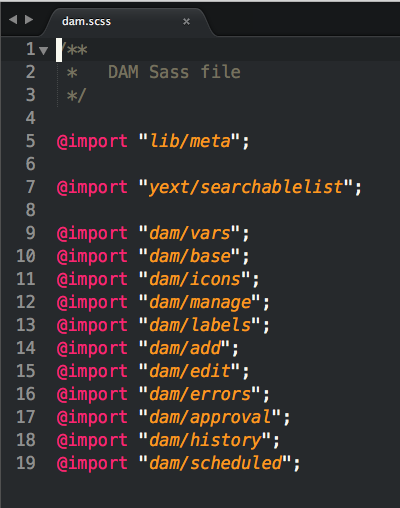
Functions
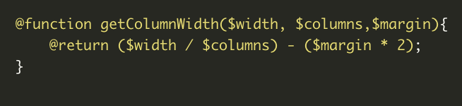
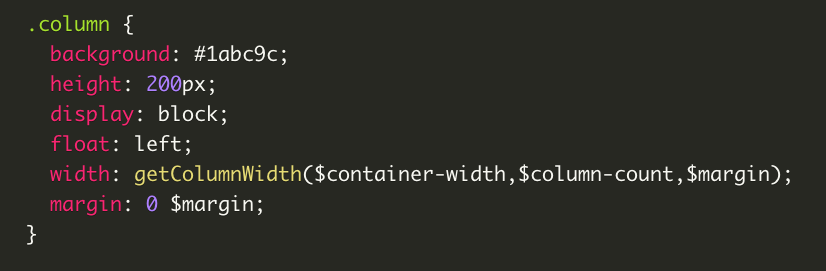
Sass Functions
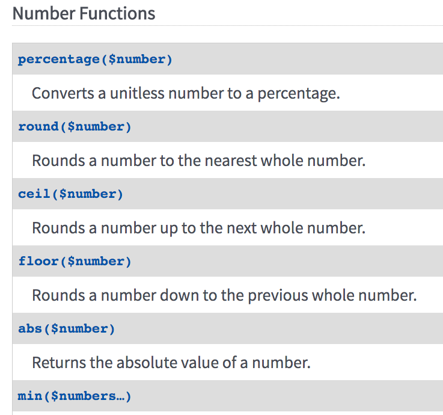
The Power of Variables: A Scenario
So, This actually happened
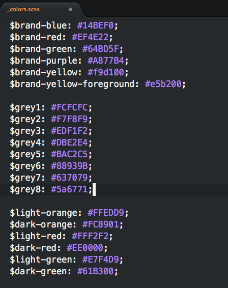
Naming Conventions
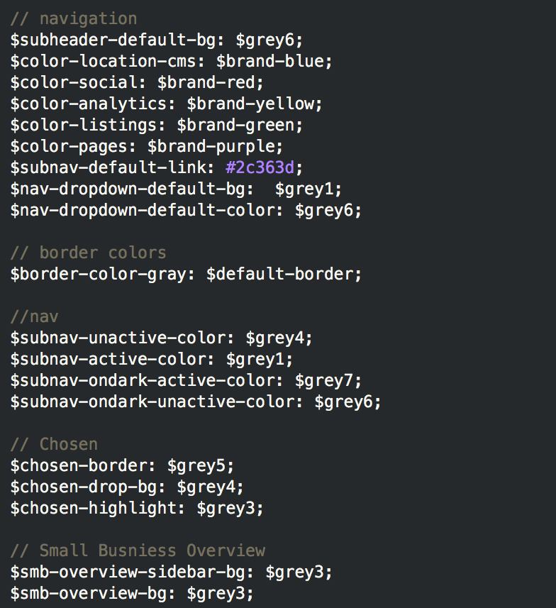
And if we change again?
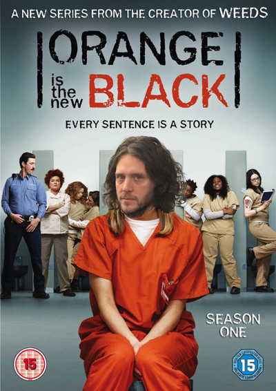
Let's Refactor
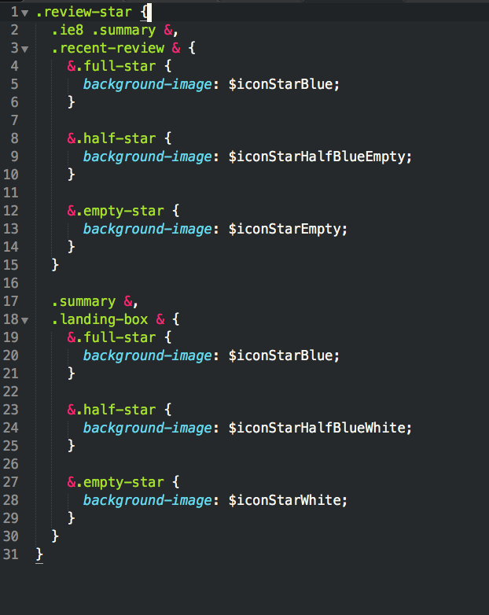
What is a @mixin?
@mixin
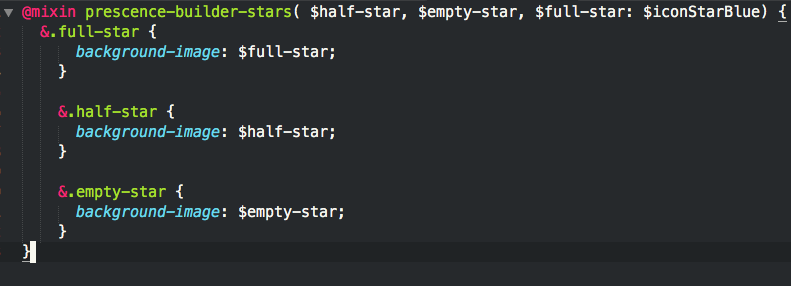
@include the Mixin
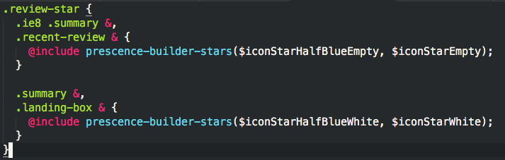
Loops
@for, @while & @each
$num: 4;
@while $num > 0 {
.module-#{$num} {
content: "#{$num}";
}
$num: $num - 1;
}
Refactoring with @for
Refactoring Partner Icons

Refactoring Partner Icons - Map
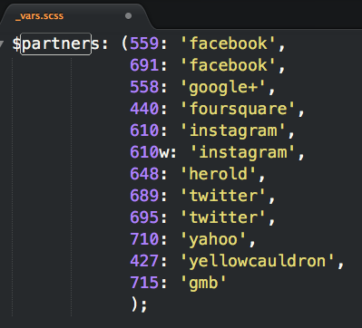
Refactoring Partner Icons - Mixins
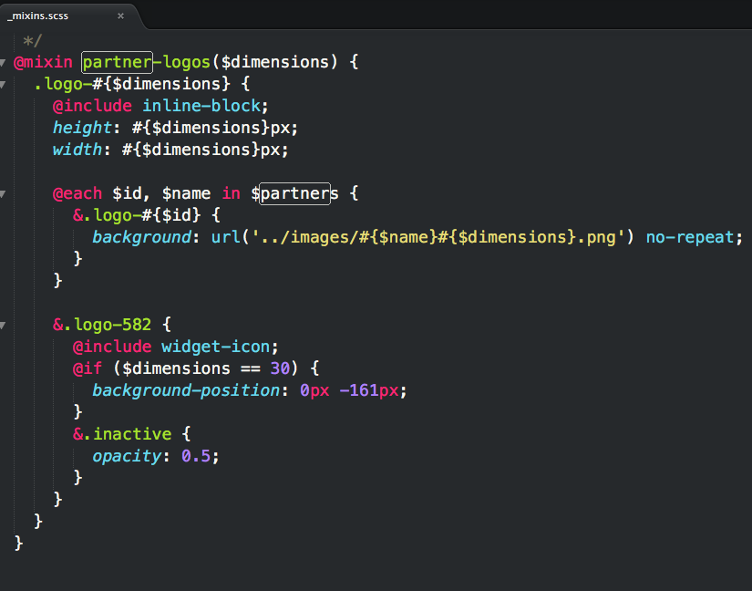
Refactoring Partner Icons - Includes
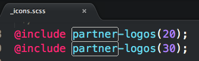
@extend
We use @extend heavily in the Storm buttons
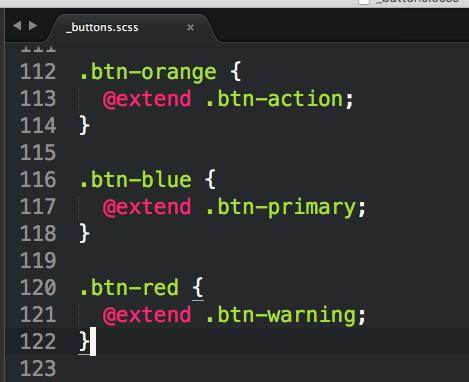
Compiled CSS using @extends
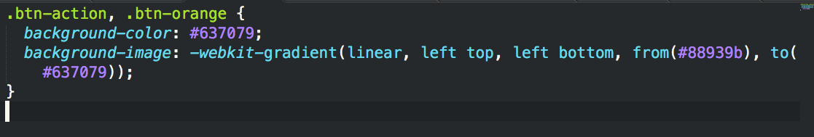
@extend does bad things sometimes
Styling the button later
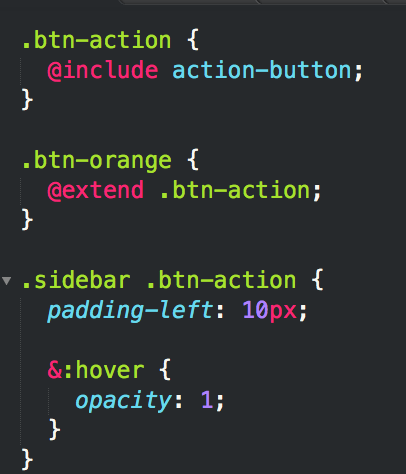
Compiled CSS:
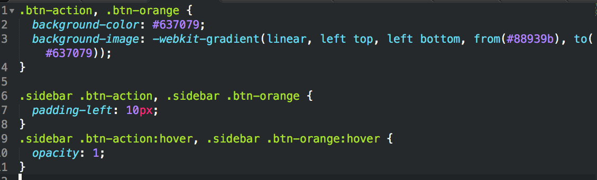
What can we do about this?
%Placeholders

Compiled CSS:
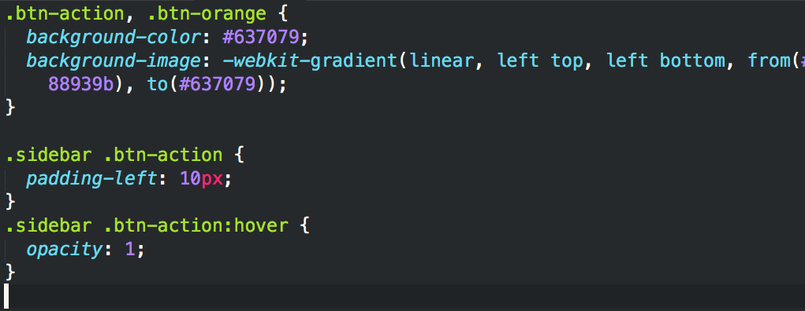
Compass
compass-style.org
opposite-position
$direction: left;
$opposite: opposite-position($direction);
.div1 {
float: $direction;
}
.div2 {
float: $opposite;
}
opposite-position Compiled CSS
.div1 {
float: left;
}
.div2 {
float: right;
}
Experimental
SCSS
.element {
@include experimental('animation', highlight 1s linear, webkit, moz, o, ms, not khtml);
}
Compiled CSS
.element {
-webkit-animation: highlight 1s linear;
-moz-animation: highlight 1s linear;
-ms-animation: highlight 1s linear;
-o-animation: highlight 1s linear;
animation: highlight 1s linear;
}
Branded Spinner
How most Engineers feel about IE Users

Resources & References
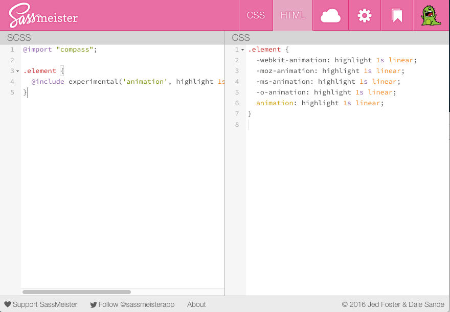
Questions?